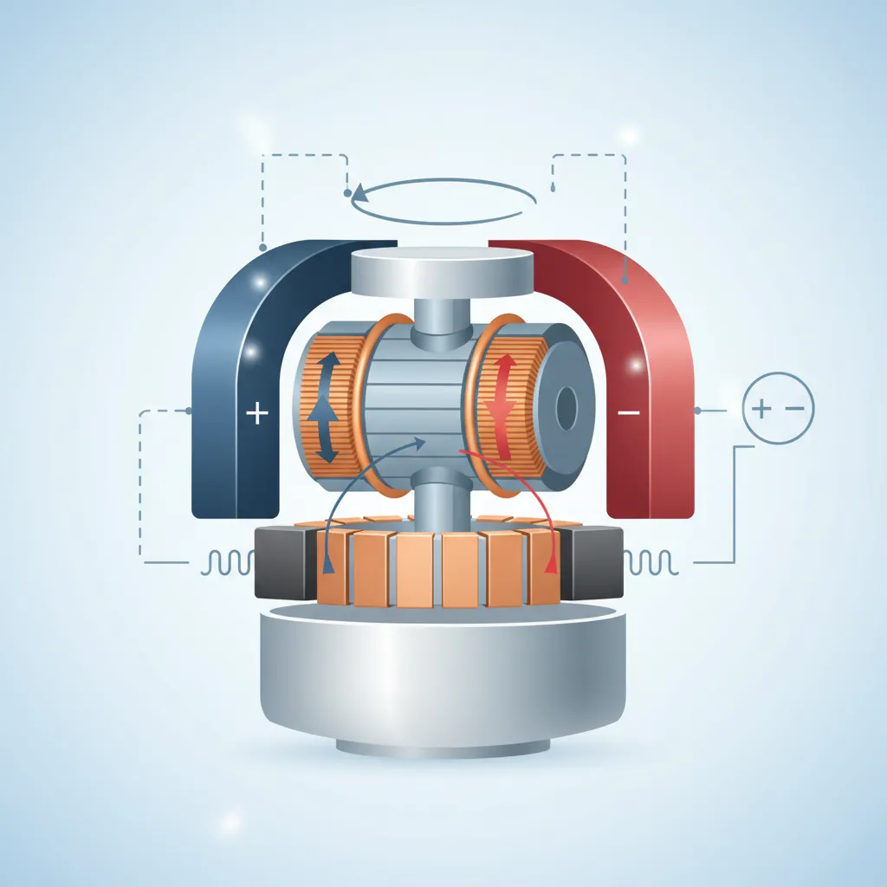
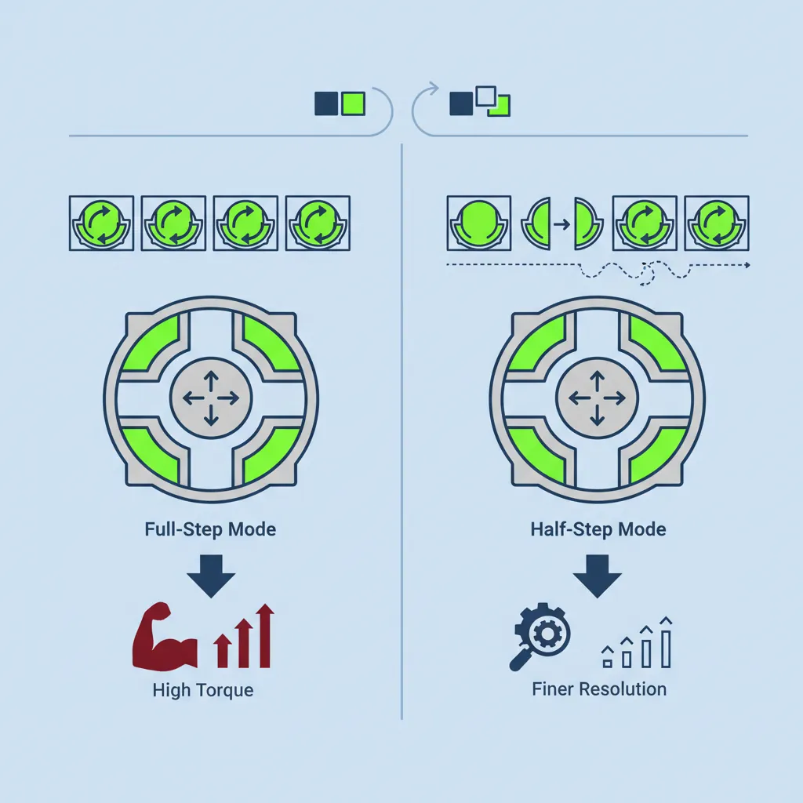
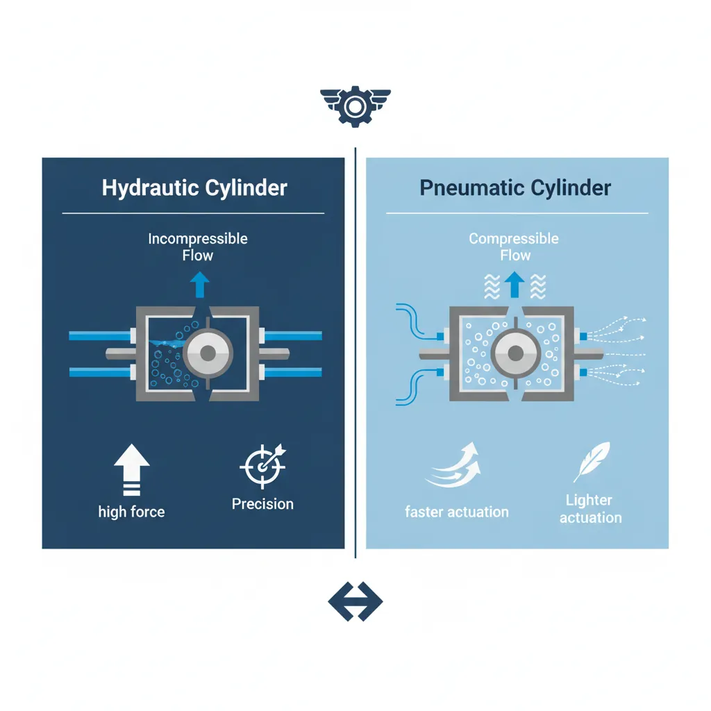
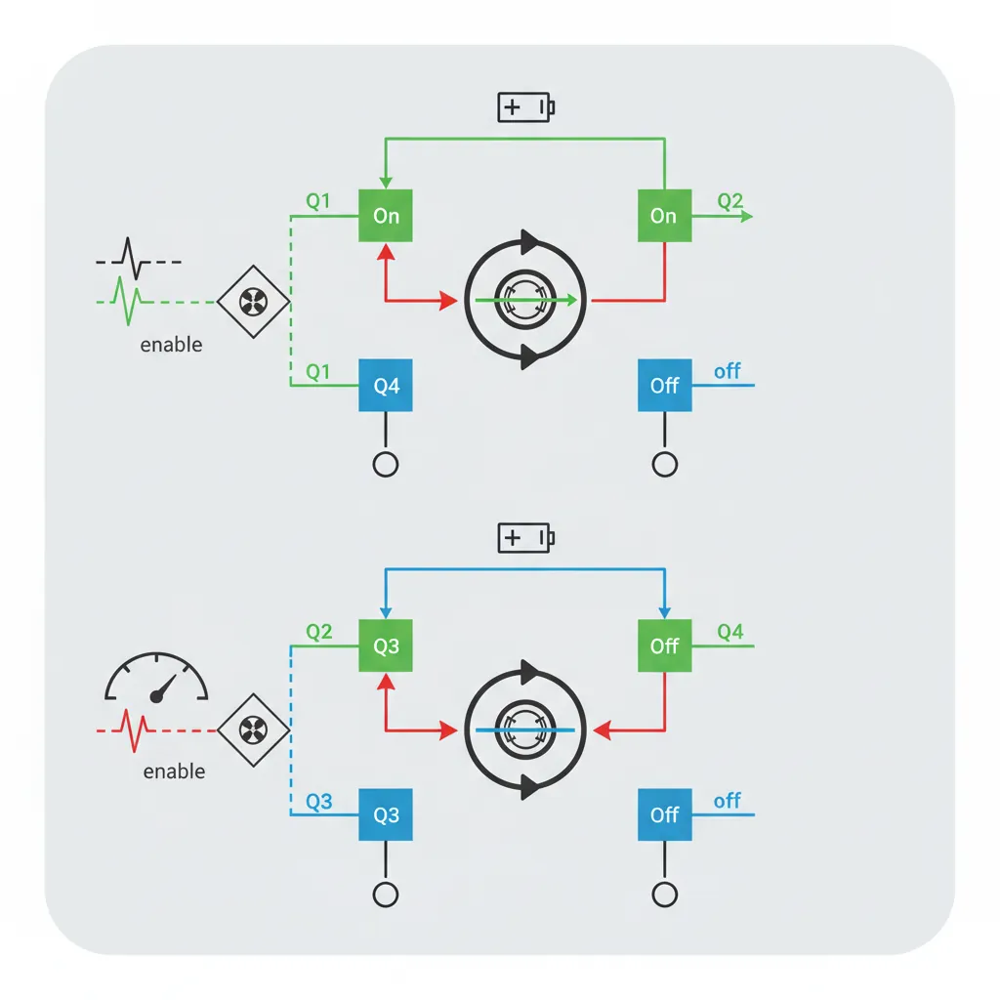
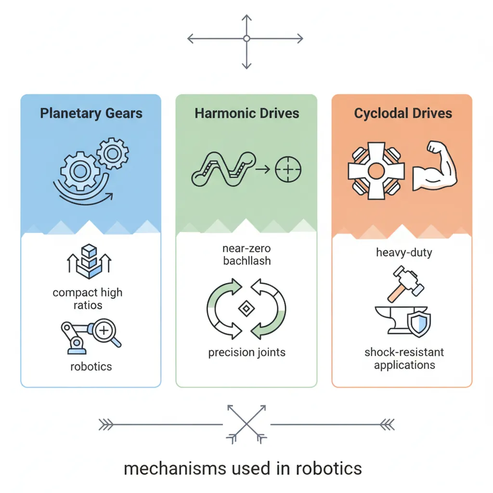

Electric Motors
Robotics & Automation Mastery
Introduction to Robotics
History, types, DOF, architectures, mechatronics, ethicsSensors & Perception Systems
Encoders, IMUs, LiDAR, cameras, sensor fusion, Kalman filters, SLAMActuators & Motion Control
DC/servo/stepper motors, hydraulics, drivers, gear systemsKinematics (Forward & Inverse)
DH parameters, transformations, Jacobians, workspace analysisDynamics & Robot Modeling
Newton-Euler, Lagrangian, inertia, friction, contact modelingControl Systems & PID
PID tuning, state-space, LQR, MPC, adaptive & robust controlEmbedded Systems & Microcontrollers
Arduino, STM32, RTOS, PWM, serial protocols, FPGARobot Operating Systems (ROS)
ROS2, nodes, topics, Gazebo, URDF, navigation stacksComputer Vision for Robotics
Calibration, stereo vision, object recognition, visual SLAMAI Integration & Autonomous Systems
ML, reinforcement learning, path planning, swarm roboticsHuman-Robot Interaction (HRI)
Cobots, gesture/voice control, safety standards, social roboticsIndustrial Robotics & Automation
PLC, SCADA, Industry 4.0, smart factories, digital twinsMobile Robotics
Wheeled/legged robots, autonomous vehicles, drones, marine roboticsSafety, Reliability & Compliance
Functional safety, redundancy, ISO standards, cybersecurityAdvanced & Emerging Robotics
Soft robotics, bio-inspired, surgical, space, nano-roboticsSystems Integration & Deployment
HW/SW co-design, testing, field deployment, lifecycleRobotics Business & Strategy
Startups, product-market fit, manufacturing, go-to-marketComplete Robotics System Project
Autonomous rover, pick-and-place arm, delivery robot, swarm simIf sensors are a robot's nervous system, actuators are its muscles. They convert electrical, hydraulic, or pneumatic energy into physical motion — rotating joints, extending limbs, gripping objects, and propelling platforms.

The DC motor (Direct Current) is the most fundamental electric actuator. When current flows through a coil in a magnetic field, a force (Lorentz force) acts on the coil, producing rotation.
| Parameter | Symbol | Typical Range | What It Means |
|---|---|---|---|
| Rated Voltage | V | 3–48V | Nominal operating voltage |
| No-Load Speed | ω₀ | 100–30,000 RPM | Speed with no external load |
| Stall Torque | τ_stall | 0.01–10+ Nm | Maximum torque at zero speed |
| Stall Current | I_stall | 0.5–50A | Current drawn at stall (maximum) |
| Motor Constant | K_t | 0.01–0.5 Nm/A | Torque per amp of current |
| Back-EMF Constant | K_e | Same as K_t (in SI) | Voltage generated per rad/s of rotation |
# DC Motor Speed-Torque Relationship
import numpy as np
class DCMotor:
"""Model a DC motor's steady-state behavior."""
def __init__(self, voltage, resistance, kt, ke, no_load_speed_rpm):
self.V = voltage # Supply voltage (V)
self.R = resistance # Armature resistance (Ω)
self.Kt = kt # Torque constant (Nm/A)
self.Ke = ke # Back-EMF constant (V·s/rad)
self.no_load_rpm = no_load_speed_rpm
def calculate(self, torque_load_nm):
"""Calculate speed, current, power for a given load torque."""
current = torque_load_nm / self.Kt
back_emf = self.V - current * self.R
speed_rad_s = back_emf / self.Ke
speed_rpm = speed_rad_s * 60 / (2 * np.pi)
power_mech = torque_load_nm * speed_rad_s
power_elec = self.V * current
efficiency = (power_mech / power_elec * 100) if power_elec > 0 else 0
return {
"torque_Nm": round(torque_load_nm, 4),
"current_A": round(current, 3),
"speed_rpm": round(max(speed_rpm, 0), 1),
"power_mech_W": round(max(power_mech, 0), 2),
"power_elec_W": round(power_elec, 2),
"efficiency_%": round(max(efficiency, 0), 1)
}
# Example: 12V DC motor (typical hobby motor)
motor = DCMotor(voltage=12, resistance=2.0, kt=0.05, ke=0.05, no_load_speed_rpm=2292)
print("=== DC Motor Speed-Torque Curve ===\n")
print(f"Motor: 12V, R=2Ω, Kt=Ke=0.05\n")
print(f"{'Torque (Nm)':>12} {'Current (A)':>12} {'Speed (RPM)':>12} {'Mech Power':>12} {'Efficiency':>12}")
print("-" * 65)
stall_torque = motor.V * motor.Kt / motor.R # τ_stall = V·Kt/R
torques = np.linspace(0, stall_torque, 8)
for tau in torques:
r = motor.calculate(tau)
print(f"{r['torque_Nm']:>12.4f} {r['current_A']:>12.3f} {r['speed_rpm']:>12.1f} "
f"{r['power_mech_W']:>10.2f} W {r['efficiency_%']:>10.1f}%")
print(f"\nStall torque: {stall_torque:.4f} Nm")
print(f"No-load speed: {motor.calculate(0)['speed_rpm']:.0f} RPM")
print(f"Peak efficiency occurs at ~50% of stall torque")
Servo Motors
A servo motor is a DC motor combined with a feedback sensor (usually an encoder) and a controller — forming a closed-loop system that can precisely control position, speed, or torque.
- DC motor: Open-loop — apply voltage, get speed (approximately). No position control.
- RC/Hobby servo: PWM signal sets target angle (0–180°). Internal potentiometer + controller holds position. Cheap ($5–$20), limited rotation.
- Industrial servo: Encoder feedback + servo drive. Precise position/velocity/torque control. High bandwidth (1–5 kHz control loops). Used in CNC machines, robot arms, pick-and-place. ($100–$5000+)
| Feature | Hobby Servo (SG90) | Industrial Servo (Yaskawa Σ-7) |
|---|---|---|
| Rotation | 0–180° (or continuous) | Unlimited rotation |
| Feedback | Potentiometer (analog) | 24-bit absolute encoder (16M counts/rev) |
| Torque | 0.18 Nm | 0.3–50+ Nm |
| Bandwidth | ~50 Hz | 3.1 kHz |
| Cost | ~$3 | $500–$5000+ |
Stepper Motors
Stepper motors divide a full rotation into discrete steps (typically 200 steps/rev = 1.8° per step). Unlike DC motors, they move in precise increments without requiring position feedback.

# Stepper Motor Step Sequence and Position Tracking
import numpy as np
class StepperMotor:
"""Simulate a stepper motor with full-step and half-step modes."""
def __init__(self, steps_per_rev=200):
self.steps_per_rev = steps_per_rev
self.step_angle = 360.0 / steps_per_rev
self.current_step = 0
self.current_angle = 0.0
# Full-step coil energization pattern (2-phase stepper)
FULL_STEP_SEQ = [
(1, 0, 1, 0), # A+, B+
(0, 1, 1, 0), # A-, B+
(0, 1, 0, 1), # A-, B-
(1, 0, 0, 1), # A+, B-
]
HALF_STEP_SEQ = [
(1, 0, 0, 0),
(1, 0, 1, 0),
(0, 0, 1, 0),
(0, 1, 1, 0),
(0, 1, 0, 0),
(0, 1, 0, 1),
(0, 0, 0, 1),
(1, 0, 0, 1),
]
def step(self, direction=1, mode='full'):
"""Take one step in the given direction."""
if mode == 'full':
self.current_step += direction
self.current_angle += direction * self.step_angle
else: # half-step
self.current_step += direction
self.current_angle += direction * (self.step_angle / 2)
return self.current_angle
def move_to_angle(self, target_angle, mode='full'):
"""Calculate steps needed to reach a target angle."""
angle_per_step = self.step_angle if mode == 'full' else self.step_angle / 2
delta = target_angle - self.current_angle
steps_needed = round(delta / angle_per_step)
direction = 1 if steps_needed >= 0 else -1
for _ in range(abs(steps_needed)):
self.step(direction, mode)
return abs(steps_needed)
# Simulate stepper motor
stepper = StepperMotor(steps_per_rev=200)
print("=== Stepper Motor Simulation ===\n")
print(f"Steps/rev: {stepper.steps_per_rev}")
print(f"Step angle: {stepper.step_angle}°")
print(f"Half-step angle: {stepper.step_angle/2}°\n")
# Full-step mode
print("--- Full-Step Mode ---")
for i in range(5):
angle = stepper.step(direction=1, mode='full')
print(f" Step {i+1}: Angle = {angle:.1f}°")
# Move to specific angle
stepper_half = StepperMotor(steps_per_rev=200)
print(f"\n--- Move to 45° (Half-Step Mode) ---")
steps = stepper_half.move_to_angle(45.0, mode='half')
print(f" Steps taken: {steps}")
print(f" Final angle: {stepper_half.current_angle:.1f}°")
print(f"\n--- Move to 90° (Half-Step Mode) ---")
steps = stepper_half.move_to_angle(90.0, mode='half')
print(f" Steps taken: {steps}")
print(f" Final angle: {stepper_half.current_angle:.1f}°")
# Speed calculation
step_rate_hz = 1000 # steps per second
rpm = (step_rate_hz / stepper.steps_per_rev) * 60
print(f"\nAt {step_rate_hz} steps/sec: {rpm:.0f} RPM")
Brushless Motors (BLDC)
Brushless DC motors (BLDC) eliminate the mechanical commutator and brushes of a traditional DC motor. Instead, electronic commutation switches current through the stator coils based on rotor position feedback (Hall sensors or back-EMF sensing).
| Feature | Brushed DC | Brushless DC (BLDC) |
|---|---|---|
| Commutation | Mechanical brushes | Electronic (ESC/driver) |
| Efficiency | 75–85% | 85–95% |
| Lifespan | 1,000–5,000 hours (brush wear) | 10,000+ hours |
| Speed Range | Up to ~10,000 RPM | Up to 100,000+ RPM |
| Noise | Moderate (brush friction) | Very quiet |
| Cost | Low ($2–$20) | Higher ($10–$200+) + driver |
| Applications | Toys, simple robots | Drones, EVs, industrial robots, CNC |
Case Study: BLDC Motors in Quadcopter Drones
Every consumer drone (DJI, Skydio, etc.) uses 4 BLDC motors spinning propellers at 5,000–15,000 RPM. The choice of BLDC is critical because:
- Power density: BLDC motors achieve 2–3x the power-to-weight ratio of brushed motors — essential for flight.
- Efficiency: 85–90% efficiency means longer flight times from limited battery capacity.
- Response speed: Electronic commutation allows RPM changes in milliseconds, critical for flight stability.
- Reliability: No brushes to wear out — critical when failure means crashing.
A DJI Mavic 3's motors produce ~1.2 kg of thrust each, totaling ~4.8 kg for a 895g drone — a 5.4:1 thrust-to-weight ratio.
Hydraulic & Pneumatic Actuators
When electric motors lack the force or power density needed, hydraulic and pneumatic actuators step in. They use pressurized fluids (oil or air) to generate enormous forces.

| Feature | Hydraulic | Pneumatic | Electric |
|---|---|---|---|
| Force Density | Very high (100,000+ N) | Moderate (100–5,000 N) | Low–Moderate |
| Speed | Moderate | Fast (air is compressible) | Variable (fast with servos) |
| Precision | Good (servo-hydraulic) | Poor (compressible air) | Excellent |
| Cleanliness | Oil leaks (messy) | Clean (uses air) | Clean |
| Complexity | High (pump, reservoir, valves) | Moderate (compressor, valves) | Low (motor + driver) |
| Best For | Excavators, heavy-lift robots, Boston Dynamics Atlas | Pick-and-place, grippers, packaging | Robot arms, precision motion |
Case Study: Boston Dynamics Atlas — Hydraulic Power Meets Agility
The original Boston Dynamics Atlas (before the 2024 electric redesign) was one of the most capable hydraulic robots ever built. Standing 1.5m tall and weighing 89 kg, it used 28 hydraulic actuators to perform backflips, parkour, and dynamic manipulation.
Why hydraulic? Atlas needed to produce forces equivalent to a 200 kg human athlete but at only 89 kg body weight. Hydraulic actuators provided the extreme power density — generating up to 5 kW per actuator — that electric motors of the same size could not match at the time.
The transition: In 2024, Boston Dynamics unveiled an all-electric Atlas, reflecting advances in electric motor power density and battery technology. The new Atlas uses custom electric actuators that finally match the performance of hydraulics while eliminating the complexity of hoses, pumps, and oil.
Linear & Soft Actuators
Linear actuators produce straight-line motion rather than rotation. Common types:
- Ball screw: A motor rotates a precision screw shaft, translating a nut linearly. High force, high precision (±0.01 mm). Used in CNC machines and 3D printers.
- Lead screw: Simpler and cheaper than ball screw, but more friction and wear. Good for low-duty applications.
- Belt/pulley linear: A timing belt driven by a motor moves a carriage. Fast but lower force. Used in 3D printers (CoreXY) and pick-and-place machines.
- Pneumatic cylinder: Air pressure extends/retracts a piston. Simple, fast, binary (extend/retract). Used in factory automation grippers.
- Voice coil: Electromagnetic linear motor with very fast response (~1 ms). Used in hard disk head positioning and precision optics.
Soft actuators are an emerging class inspired by biological muscles:
- McKibben pneumatic muscles: Braided mesh around an inflatable bladder contracts when pressurized (like a biological muscle). Force-to-weight ratio exceeds 400:1.
- Shape Memory Alloys (SMA): Nitinol wire contracts ~5% when heated. Silent and compact but slow (1–10 second cycles) and low efficiency (~5%).
- Dielectric Elastomer Actuators (DEA): Polymer films that stretch when voltage is applied (100–5000V). Fast, silent, muscle-like response. Still in research.
Motor Drivers & Power Electronics
Motors cannot be connected directly to a microcontroller — they draw far more current than digital pins can supply. Motor drivers are the intermediary that amplifies control signals into the high-current signals motors need.

| Driver Type | Motor Type | Features | Popular ICs |
|---|---|---|---|
| H-Bridge | Brushed DC | Bidirectional speed control via PWM, braking | L298N, TB6612FNG, DRV8870 |
| Stepper Driver | Stepper | Microstepping, current limiting, decay modes | A4988, DRV8825, TMC2209 |
| ESC | BLDC | Electronic commutation, PWM speed, regenerative braking | SimonK, BLHeli, VESC |
| Servo Drive | AC/DC Servo | Position/velocity/torque loops, EtherCAT, CAN | Yaskawa Σ-7, Beckhoff AX5000 |
# H-Bridge PWM Motor Control Simulation
import numpy as np
class HBridgeDriver:
"""Simulate an H-Bridge motor driver with PWM speed control."""
def __init__(self, supply_voltage=12.0, max_current=2.0):
self.v_supply = supply_voltage
self.i_max = max_current
self.state = "COAST" # COAST, FORWARD, REVERSE, BRAKE
def set_direction(self, direction):
"""Set motor direction: 'forward', 'reverse', 'brake', 'coast'."""
states = {
'forward': ('HIGH', 'LOW', 'LOW', 'HIGH'), # IN1, IN2, IN3, IN4
'reverse': ('LOW', 'HIGH', 'HIGH', 'LOW'),
'brake': ('LOW', 'LOW', 'LOW', 'LOW'), # All low = dynamic brake
'coast': ('LOW', 'LOW', 'LOW', 'LOW'),
}
self.state = direction.upper()
pins = states.get(direction, states['coast'])
return pins
def pwm_output(self, duty_cycle_pct):
"""Calculate effective voltage and current from PWM duty cycle."""
duty = np.clip(duty_cycle_pct, 0, 100) / 100.0
v_effective = self.v_supply * duty
i_estimated = self.i_max * duty # Simplified linear model
power = v_effective * i_estimated
return {
"duty_cycle_%": duty_cycle_pct,
"v_effective_V": round(v_effective, 2),
"i_estimated_A": round(i_estimated, 3),
"power_W": round(power, 2),
"state": self.state
}
# Simulate motor control at different duty cycles
driver = HBridgeDriver(supply_voltage=12.0, max_current=2.0)
driver.set_direction('forward')
print("=== H-Bridge PWM Motor Control ===\n")
print(f"Supply: {driver.v_supply}V, Max Current: {driver.i_max}A\n")
print(f"{'Duty Cycle':>12} {'Voltage':>10} {'Current':>10} {'Power':>10}")
print("-" * 45)
for duty in [0, 10, 25, 50, 75, 100]:
result = driver.pwm_output(duty)
print(f"{result['duty_cycle_%']:>10}% {result['v_effective_V']:>8.1f}V "
f"{result['i_estimated_A']:>8.3f}A {result['power_W']:>8.2f}W")
print(f"\nPWM Frequency: Typically 1-20 kHz (above audible range)")
print(f"Higher frequency = smoother motor operation, lower acoustic noise")
Power Electronics Basics
Key power electronics concepts for robotics:
- PWM (Pulse Width Modulation): Rapidly switching power on/off at a fixed frequency. The duty cycle (% ON time) controls effective voltage. At 50% duty on 12V → effective 6V average.
- MOSFET: The switching element in motor drivers. N-channel MOSFETs (like IRLZ44N) act as high-speed switches with very low on-resistance (~25 mΩ).
- Flyback diode: Motors are inductive loads — when current is suddenly cut, the collapsing magnetic field generates a voltage spike that can destroy electronics. A flyback diode absorbs this energy safely.
- Current sensing: A small shunt resistor (0.1Ω) in series with the motor, measured by an amplifier. Essential for torque control and overcurrent protection.
- Regenerative braking: When a motor decelerates, it acts as a generator. The energy can be fed back to the battery (EVs), or dissipated in a braking resistor.
Torque & Speed Curves
The torque-speed curve is the most important specification for understanding motor behavior:
Choosing the right motor means matching the operating point (where motor curve intersects load curve) to ensure:
- Sufficient torque at the required speed
- Operation in the high-efficiency region (typically 25–75% of stall torque)
- Adequate thermal margin (continuous operation without overheating)
Gear Systems & Transmissions
Most motors spin too fast and produce too little torque for direct use. Gear reductions trade speed for torque — a 100:1 gearbox reduces speed by 100× but multiplies torque by 100× (minus friction losses).

| Gear Type | Ratio Range | Efficiency | Backlash | Best For |
|---|---|---|---|---|
| Spur Gear | 1:1 – 10:1 per stage | 95–98% | Moderate | Simple power transmission |
| Planetary | 3:1 – 100:1 | 90–97% | Low–Moderate | Robot joints, compact high-ratio |
| Harmonic Drive | 30:1 – 320:1 | 80–90% | Near zero (<1 arcmin) | Robot arms, precision joints |
| Cycloidal | 10:1 – 120:1 | 85–95% | Very low | Heavy-duty, shock-resistant |
| Worm Gear | 10:1 – 100:1 | 40–85% | Self-locking | Holding loads without brakes |
# Gear Ratio Calculator — Motor + Gearbox Selection
import numpy as np
def gear_reduction(motor_speed_rpm, motor_torque_nm, ratio, efficiency=0.90):
"""
Calculate output speed and torque after gear reduction.
Parameters
----------
motor_speed_rpm : float
Motor shaft speed (RPM)
motor_torque_nm : float
Motor shaft torque (Nm)
ratio : float
Gear reduction ratio (e.g., 50 means 50:1)
efficiency : float
Gearbox efficiency (0-1)
Returns
-------
dict with output speed, torque, and power
"""
output_speed = motor_speed_rpm / ratio
output_torque = motor_torque_nm * ratio * efficiency
power_in = motor_torque_nm * (motor_speed_rpm * 2 * np.pi / 60)
power_out = output_torque * (output_speed * 2 * np.pi / 60)
return {
"motor_rpm": motor_speed_rpm,
"motor_torque_Nm": motor_torque_nm,
"ratio": f"{ratio}:1",
"output_rpm": round(output_speed, 1),
"output_torque_Nm": round(output_torque, 2),
"power_in_W": round(power_in, 2),
"power_out_W": round(power_out, 2),
"efficiency_%": efficiency * 100
}
# Example: Selecting gearbox for a robot arm joint
motor_speed = 6000 # RPM (typical BLDC)
motor_torque = 0.05 # Nm
print("=== Gear Reduction Comparison ===\n")
print(f"Motor: {motor_speed} RPM, {motor_torque} Nm\n")
gearboxes = [
("Spur 10:1", 10, 0.96),
("Planetary 50:1", 50, 0.92),
("Harmonic 100:1", 100, 0.85),
("Harmonic 160:1", 160, 0.83),
("Cycloidal 80:1", 80, 0.90),
]
print(f"{'Gearbox':<20} {'Output RPM':>12} {'Output Torque':>14} {'Efficiency':>12}")
print("-" * 60)
for name, ratio, eff in gearboxes:
result = gear_reduction(motor_speed, motor_torque, ratio, eff)
print(f"{name:<20} {result['output_rpm']:>10.1f} {result['output_torque_Nm']:>12.2f} Nm {result['efficiency_%']:>10.0f}%")
print(f"\nKey insight: Higher ratio = more torque but lower speed and efficiency")
print(f"Harmonic drives dominate robot arms due to zero backlash")
Compliance & Elasticity
Series Elastic Actuators (SEA) intentionally place a spring between the motor and the load. This seems counterintuitive — why add "slop" to a precision system?
- Benefits: Accurate force sensing (by measuring spring deflection), shock absorption, safer human-robot interaction, energy storage (like tendons).
- Trade-off: Lower bandwidth (the spring limits how fast force can change), slightly lower positional accuracy.
- Applications: Collaborative robots (Universal Robots uses quasi-elastic actuators), prosthetic limbs (MIT Cheetah leg SEAs enable running), humanoid robots.
Interactive Tool: Actuator Selection Worksheet
Use this tool to document actuator requirements for your robotics project. Generate a downloadable specification sheet as Word, Excel, or PDF.
Actuator Selection Worksheet
Fill in your project requirements and actuator choices. Download as Word, Excel, or PDF.
All data stays in your browser. Nothing is sent to or stored on any server.
Exercises & Challenges
Exercise 1: Motor Selection
A mobile robot wheel needs to produce 2 Nm of torque at 120 RPM. You have a brushed DC motor rated at 6000 RPM with 0.04 Nm of torque.
- What gear ratio do you need?
- If you use a planetary gearbox with 92% efficiency, what is the actual output torque?
- Is the motor sufficient for this application?
Exercise 2: PWM Duty Cycle
A 24V BLDC motor is controlled via PWM at 10 kHz. What effective voltage does the motor see at:
- 25% duty cycle?
- 50% duty cycle?
- 75% duty cycle?
- If the motor draws 2A at full voltage, what is the average current at 50% duty?
Exercise 3: Actuator Comparison
For each application, select the best actuator type and justify your choice:
- A gripper for a factory pick-and-place machine (needs to open/close quickly, binary positions)
- A joint on a 6-DOF collaborative robot arm (needs precise position control, safe for human interaction)
- A leg actuator for a heavy-duty walking robot (150 kg payload)
- A 3D printer nozzle positioning system (needs precise linear motion in X/Y)
Exercise 4: Code Challenge
Modify the DC motor simulation code to:
- Add a method that calculates the maximum efficiency operating point (hint: it occurs where mechanical power output is maximized)
- Plot the speed-torque curve and efficiency curve on the same graph (use matplotlib)
- Find the motor constants K_t and K_e from given no-load speed and stall current specifications
Conclusion & Next Steps
In this deep dive into actuators and motion control, we've covered:
- Electric motors — DC, servo, stepper, and brushless motors with their speed-torque characteristics
- Hydraulic & pneumatic — high-force alternatives and their trade-offs
- Motor drivers — H-bridges, ESCs, servo drives, and PWM control
- Power electronics — MOSFETs, flyback protection, current sensing, regenerative braking
- Gear systems — spur, planetary, harmonic, cycloidal gears and their selection criteria
- Compliance — Series Elastic Actuators for safe, force-sensitive operation